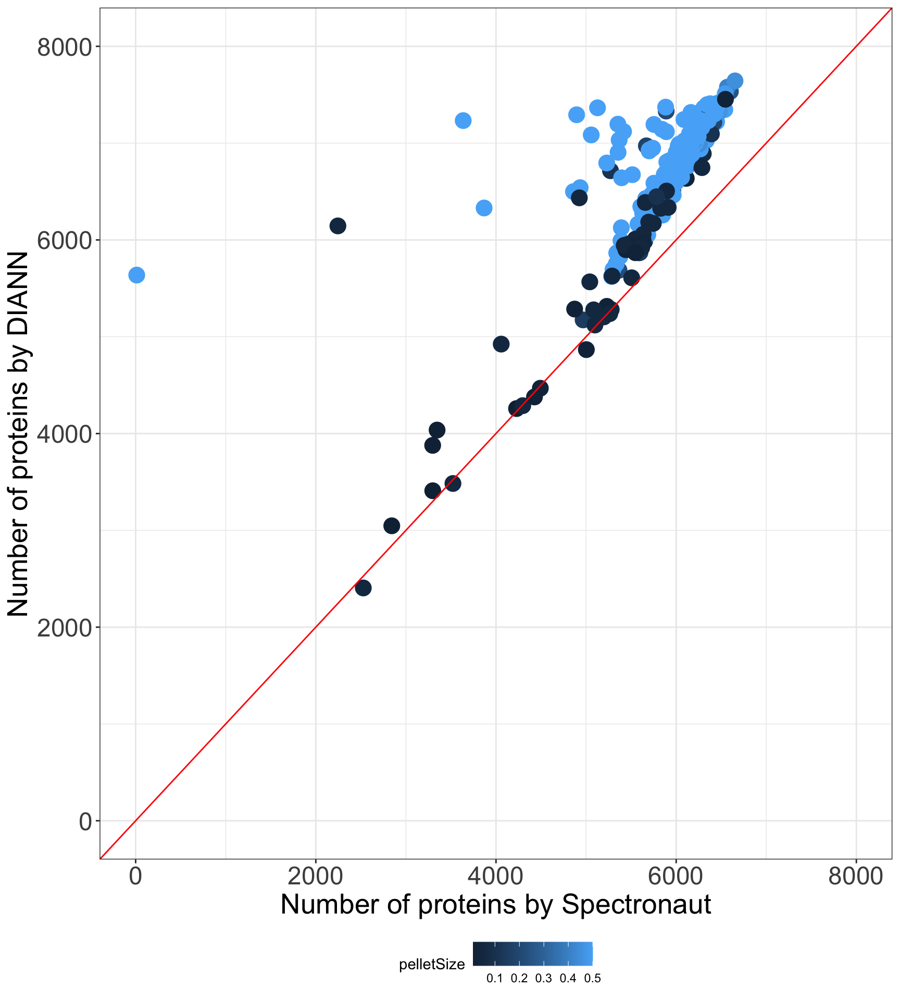

load("output/seDiann.RData")
smpAnno <- colData(seDiann) %>% as_tibble(rownames = "smpID")
numDetect.diann <- tibble(smpID = colnames(seDiann),
DIANN = colSums(!is.na(assay(seDiann))))
diagOrd <- colData(seDiann) %>% as_tibble(rownames = "smpID") %>% group_by(diag) %>%
summarise(n = length(smpID)) %>% arrange(desc(n)) %>%
pull(diag)
load("output/seSpec.RData")
numDetect.spec <- tibble(smpID = colnames(seSpec),
Spectronaut = colSums(!is.na(assay(seSpec))))
plotCom <- left_join(numDetect.diann, numDetect.spec) %>% left_join(smpAnno) %>%
mutate(condition = factor(diag, levels = diagOrd))Joining with `by = join_by(smpID)`
Joining with `by = join_by(smpID)`ggplot(plotCom, aes(x = Spectronaut, y = DIANN)) +
geom_point(aes(col = condition), size=5) +
theme_bw() +
xlab("Number of proteins by Spectronaut") +
ylab("Number of proteins by DIANN") +
geom_abline(slope = 1, intercept = 0, color = "red") +
xlim(0, 8000) + ylim(0, 8000) +
theme(legend.position = "bottom",
axis.text = element_text(size = 18),
axis.title = element_text(size = 20))# ggsave("protNumCompare.pdf", height = 10, width = 9)
ggplot(plotCom, aes(x = Spectronaut, y = DIANN)) +
geom_point(aes(col = pelletSize), size=5) +
theme_bw() +
xlab("Number of proteins by Spectronaut") +
ylab("Number of proteins by DIANN") +
geom_abline(slope = 1, intercept = 0, color = "red") +
xlim(0,8000) + ylim(0,8000) +
theme(legend.position = "bottom",
axis.text = element_text(size=18),
axis.title = element_text(size=20))
# ggsave("protNumCompare_pellet.pdf", height = 10, width = 9)